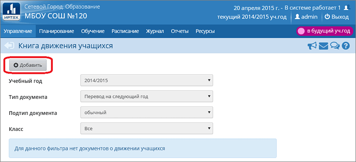

Перед тем как создавать приказы о переводе учащихся на новый учебный год, необходимо утвердить список классов в будущем году.
После этого вам необходимо переключиться в текущий учебный год и перейти в раздел "Движение" (на иллюстрации текущим является 2014/15 год):

Здесь можно создавать следующие типы документов о движении:
| · | Перевод на следующий год;
|
| · | Второгодники;
|
| · | Выпускники.
|
Как проконтролировать текущее состояние перевода на следующий год?
См. отчёт "Списки переведённых на следующий учебный год и второгодников"
Документы с типом "Перевод на следующий год"
Для данного типа документов по умолчанию предлагается перевод на один год старше (однако можно выбрать перевод в любую старшую параллель). Необходимо выбрать один из подтипов:
| · | обычный - для 1-8-х и 10-х классов;
|
| · | завершение программы (после экзаменов) - для 9-классников, которые успешно завершили программу;
|
| · | условный перевод/выпуск - для 9-классников, которые имеют академическую задолженность (см. подробнее);
|
| · | в прикреплённые к ОО.
|
Примечание. Категория учащихся "Прикреплённые к ОО" позволяет сформировать приказы о переводе для детей-инвалидов, которые учатся на дому, а также для учащихся с формой обучения "Самообразование" или "Семейное образование". Такие учащиеся не зачисляются в класс, а прикрепляются только к параллели. Более подробно о категории "Прикреплённые к ОО".
Документы с типом "Второгодники"
Оставить на второй год в системе можно учащихся любых классов, номер параллели сохраняется.
Последовательно добавляя учеников, можно включить в один документ всех учеников, остающихся на второй год по всем классам.
Документы с типом "Выпускники"
Выпускниками можно сделать учащихся 4-х, 9-х, 11-х (12-х) классов. Точнее, эти параллели определяются из границ ступеней в разделе "Настройки школы".
Необходимо выбрать один из подтипов:
| · | обычный - для успешно сдавших все экзамены,
|
| · | условный перевод/выпуск - для выпускников, имеющих академическую задолженность.
|
Для выпускников 11-х (12-х) классов необходимо выбрать, с какими документами они выпускаются, из следующего списка:
| · | Аттестат об основном общем образовании
|
| · | Аттестат об основном общем образовании с отличием
|
| · | Аттестат о среднем общем образовании
|
| · | Аттестат о среднем общем образовании с отличием. Медаль "За особые успехи в учении"
|
| · | Без аттестата о среднем общем образовании
|
| · | Серебр.медаль. Атт. о ср.(полн.) общ.образовании
|
| · | Золотая медаль. Атт. о ср.(полн.) общ.образовании
|
| · | Справка об окончании
|
| · | Свидетельство об обучении
|
| · | Свидетельство об окончании спец.(корр.) общеобразовательной школы VIII вида
|
| · | Свидетельство об окончании спец.(корр.) класса образовательной организации
|
Для выпускников 9-х классов необходимо выбрать документ из следующего списка:
| · | Аттестат об основном общем образовании
|
| · | Аттестат об основном общем образовании с отличием
|
| · | Справка об окончании
|
| · | Свидетельство об обучении
|
| · | Свидетельство об окончании спец.(корр.) общеобразовательной школы VIII вида
|
| · | Свидетельство об окончании спец.(корр.) класса образовательной организации
|
При выпуске также можно объединить в один приказ учащихся разных классов. Например, можно создать один приказ о выпуске всех 11-х классов.